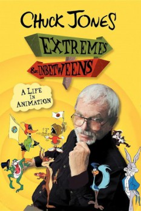

Country:United States, 90 minutes
Spoken languages:English
Genres:Documentary
Director(s):Margaret Selby
Writer(s):Margaret Selby, Greg Ford, Paul Bacon
Video Codec:Unknown
Number: 451

Certification:PG
Storyline:
This biography, shown on American television as part of the PBS "Great Performances" series, examines the life works of one of Hollywood's most celebrated animators, Chuck (Charles M.) Jones. He is best known for Warner Brothers cartoons featuring Bugs Bunny, Daffy Duck, Elmer Fudd, Porky Pig, Road Runner, Wile E. Coyote, and Pepe LePew. Included are plenty of behind-the-scenes descriptions of how an animated film is made, and (best of all) many clips from Chuck's cartoons.
Cast:
Chuck Jones (as Self), Ken Burns (as Self), Linda Jones Clough (as Self), Joe Dante (as Self), Marian Dern (as Self)
Medium: Media file,
Location: D:\Animation\Warner Bros\Chuck Jones - Extremes and Inbetweens - Documentary - Animation Inspirations.mp4
Loaned: No
Aspect ratio: Unknown